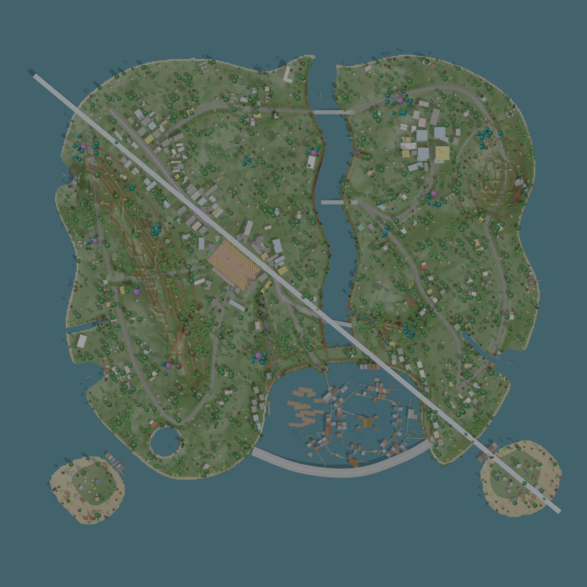
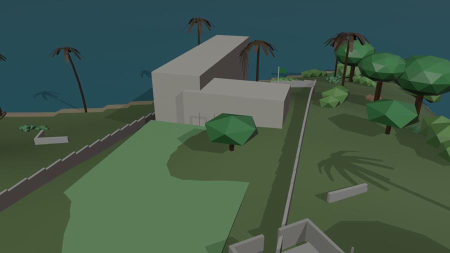
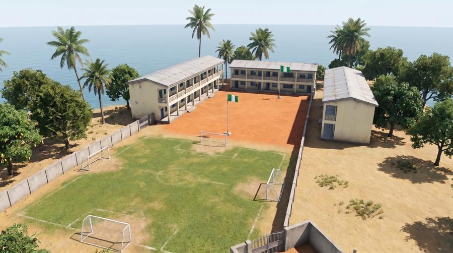

1. Overview
This page lists every kind of asset on the island, grouped so each one can be made once, varied in a controlled way and tracked. Counts come from the blockout file (objects in the visible layers of v029); the concept art adds props the blockout does not have yet.
Terrain, ground and water
Buildings
Compounds, places and prefabs
Roads and paths (modular)
Bridges and elevated structures
Waterfront walkways and decks
Cover, walls and fences
Vehicles and boats
Vegetation
Life props and set dressing
Gameplay objects (to plan)
2. How assets are grouped
Every asset sits on one path: Category → Group → Type → Variant → Instance. The type is the unit we design, name and track (it has a code like BLD-H1). Variants change a type without making a new one; an instance is one placed copy on the map.
Rule of thumb: a different footprint or gameplay job means a new type. A different look on the same footprint and job is a variant. A different size within a set range is just scale on the instance, not a variant.
3. What the map is made of
Vegetation and cover make up most of the map by count; buildings are few in number but carry all the loot and interiors. The thicket VEG-S01 alone is 1 in 6 placed objects, which is exactly the kind of asset that should be one model with scale and tint variation.



3b. How big is our map for 24 and 50 players?
Our island has about 0.64 km² of land, about 3,500 studs (about 1 km) across. Two ways to compare it with PUBG: raw ground per player, and ground per player measured in weapon reach. Reach is what decides how often players meet.
By ground alone our island is crowded: at 50 players it is about 6 times denser than Livik.
Lower = players meet more. Measured by reach, our island is the most spread out of all, especially at 24 players.
| Map | Players | Ground per player | Side of each player's square | In longest-shot ranges |
|---|---|---|---|---|
| Ours | 50 | 12,800 m² | about 113 m = 404 studs | about 3.4 |
| Ours | 24 | 26,700 m² | about 163 m = 583 studs | about 4.9 |
| Livik (2×2 km) | 52 | 76,900 m² | about 277 m | about 0.9 |
| Sanhok (4×4 km) | 100 | 160,000 m² | about 400 m | about 1.3 |
| Erangel (8×8 km) | 100 | 640,000 m² | about 800 m | about 2.7 |
- 50 players plays a little more spread out than Erangel and about 4 times more spread out than Livik. That works: players bunch up in the five main places and the circle pulls them together.
- 24 players is very sparse, nearly twice Erangel's spacing. Outside the main places players would rarely meet.
- Start the first circle smaller than the island.
- Raise weapon ranges.
- Keep the island for 50 players, and open only part of it for 24-player matches.
Sources and assumptions: our land area and width are from Kit and Density Rules v03 §1.4. 1 stud ≈ 0.28 m (the usual Roblox scale). Our longest weapon reach is about 120 studs (about 34 m). The 300 m PUBG long shot is Claude's working figure, not a sourced one. PUBG map sizes are the published 8×8, 4×4 and 2×2 km and include water, so their real land per player is a bit smaller.
4. All asset groups, with counts
Tags: blockout placed in v029 · concept seen only in concept art, needs adding · plan only in the plans. "Placed" is the number of copies in the visible blockout layers.
TER Terrain, ground and water4 groups29 types33 placed
The base everything sits on: the height map, the sea and lagoon, the painted ground cover classes and the shore types.
Base surfaces (2)
| Code | Asset | Placed | Exists in | Note |
|---|---|---|---|---|
| TER-Terrain | Island height-field (1 unit = 1 stud) | 1 | blockout | one mesh, 4-stud voxels in Roblox |
| TER-Water | Sea and lagoon surface | 1 | blockout |
Ground cover classes (GC) (13)
| Code | Asset | Placed | Exists in | Note |
|---|---|---|---|---|
| GC-1 | Worn bare earth / laterite | blockout | painted on the terrain, not placed | |
| GC-2 | Lived-in short grass | blockout | painted on the terrain, not placed | |
| GC-3 | Vacant-plot weeds | blockout | painted on the terrain, not placed | |
| GC-4 | Farm plots incl. cassava | blockout | painted on the terrain, not placed | |
| GC-5 | Fallow / thicket ground | blockout | painted on the terrain, not placed | |
| GC-6 | Woodlot floor | blockout | painted on the terrain, not placed | |
| GC-7 | Hill crown | blockout | painted on the terrain, not placed | |
| GC-8 | Sand shore | blockout | painted on the terrain, not placed | |
| GC-9 | Swamp / mangrove edge | blockout | painted on the terrain, not placed | |
| GC-10 | Strand creeper mat | blockout | painted on the terrain, not placed | |
| GC-11 | Estate lawn | blockout | painted on the terrain, not placed | |
| GC-12 | Paving (interlock / asphalt) | blockout | painted on the terrain, not placed | |
| GC-13 | Tilled cassava soil | blockout | painted on the terrain, not placed |
Shore types (SHR) (4)
| Code | Asset | Placed | Exists in | Note |
|---|---|---|---|---|
| SHR-1 | Sand beach | blockout | 57.7% of shore | |
| SHR-2 | Mudflat | blockout | Makoko bay, coves | |
| SHR-3 | Revetment / sea wall | 1 | blockout | where masonry is near water |
| SHR-4 | Cut bank / bluff | blockout |
Landscape features (LND) (10)
| Code | Asset | Placed | Exists in | Note |
|---|---|---|---|---|
| LND-F | Farmland | plan | ||
| LND-B | Bush / scrub belt | plan | ||
| LND-R | Laterite ridge | blockout | ||
| LND-H | Hill crown | blockout | ||
| LND-Q | Sand / borrow pit | 27 | blockout | 14 sizes |
| LND-S | Swamp / mangrove edge | blockout | ||
| LND-C | Creek / canal | blockout | ||
| LND-E1 | Estate football field | 1 | blockout | |
| LND-E2 | Swimming pool | 1 | blockout | |
| LND-E3 | Tennis / basketball court | 1 | blockout |
BLD Buildings7 groups29 types574 placed
Everything with walls and a roof that players read as a building. Most are enterable and carry an interior code and loot slots.
Village and residential (4)
| Code | Asset | Placed | Exists in | Note |
|---|---|---|---|---|
| BLD-H1 | Face-me-I-face-you rooming house | 45 | blockout | 31 sizes on map |
| BLD-H2 | Family house / duplex | 85 | blockout | 40 sizes on map |
| BLD-Q1 | Boys' quarters | 39 | blockout | |
| BLD-U1 | Unfinished block shell | 110 | blockout | signature cover-loot piece |
Town and commercial (5)
| Code | Asset | Placed | Exists in | Note |
|---|---|---|---|---|
| BLD-T1 | Tenement storey building (2-4 floors) | 13 | blockout | |
| BLD-S1 | Shophouse | 12 | blockout | |
| BLD-S2 | Lock-up shop row | 11 | blockout | |
| BLD-K1 | Container shop / kiosk | 25 | blockout | |
| BLD-W1 | Warehouse / shed | 5 | blockout |
Civic, religious, school (4)
| Code | Asset | Placed | Exists in | Note |
|---|---|---|---|---|
| BLD-C1 | Church hall | 4 | blockout | |
| BLD-C2 | Mosque + minaret | 4 | blockout | |
| BLD-E1 | School block | 2 | blockout | |
| BLD-F1 | Filling station | 4 | blockout |
Gated estate (TMH) (6)
| Code | Asset | Placed | Exists in | Note |
|---|---|---|---|---|
| BLD-G1 | Government estate block | 4 | blockout | |
| BLD-G2 | King Tower high-rise | 1 | blockout | |
| BLD-G3 | Detached duplex | 11 | blockout | |
| BLD-G4 | Terrace town-house row | 4 | blockout | |
| BLD-G5 | Clubhouse | 1 | blockout | |
| BLD-S3 | Gatehouse / estate office | 2 | blockout |
Utility and towers (4)
| Code | Asset | Placed | Exists in | Note |
|---|---|---|---|---|
| BLD-X1 | Water tank stand | 45 | blockout | |
| BLD-X2 | Elevated estate water tower | 2 | blockout | |
| BLD-X4 | Borehole house | 1 | blockout | |
| BLD-X5 | Telecom mast | 1 | blockout |
Makoko stilt buildings (4)
| Code | Asset | Placed | Exists in | Note |
|---|---|---|---|---|
| BLD-M1 | Stilt house, one room | 88 | blockout | |
| BLD-M3 | Stilt house, two-storey | 21 | blockout | |
| BLD-M4 | Stilt hall (church / school) | 6 | blockout | |
| BLD-M5 | Open fish-smoking shed | 23 | blockout |
Landmark one-offs (2)
| Code | Asset | Placed | Exists in | Note |
|---|---|---|---|---|
| BLD-L1 | POI landmark building | 1 | blockout | one per P1 |
| DFD-STRUCT | Danfo Depot sheds and office | 4 | blockout | needs proper BLD codes |
CMP Compounds, places and prefabs4 groups24 types22 placed
Groups of assets saved and reused as one unit: a walled family compound, a school, a whole minor place. These are 'prefabs' in game-studio terms.
Compound types (CMP) (7)
| Code | Asset | Placed | Exists in | Note |
|---|---|---|---|---|
| CMP-A | Family compound | 1 | blockout | |
| CMP-B | Rooming compound | blockout | ||
| CMP-C | Mechanic / vulcaniser yard | plan | ||
| CMP-D | School compound | 1 | blockout | |
| CMP-E | Estate plot (duplex + BQ + tank) | 11 | blockout | was 'church compound' before v03 |
| CMP-F | Unfinished estate | blockout | ||
| CMP-R | Religious compound (church / mosque) | 2 | blockout | new in v029 |
Minor places (P2) (10)
| Code | Asset | Placed | Exists in | Note |
|---|---|---|---|---|
| P2_01 | Tarkwa Dredge | 1 | blockout | |
| P2_02 | Mercy Land Chapel | 1 | blockout | |
| P2_03 | Iyanrin Sand Market | 1 | blockout | |
| P2_04 | Unity Grammar School | 1 | blockout | |
| P2_05 | Okun Fish-Smoking Yard | 1 | blockout | |
| P2_08 | Bode Laterite Pit | 1 | blockout | |
| P2_09 | Alfa Beach Sand-Diggers | 1 | blockout | |
| P2_11 | Eja Jetty Tower | 1 | blockout | |
| P2_15 | Jum'at Mosque | 1 | blockout | |
| P2_18 | Ebute Boatyard | 1 | blockout |
Named locations (P1) (5)
| Code | Asset | Placed | Exists in | Note |
|---|---|---|---|---|
| ILE | Ile Isoko (dense core) | 1 | blockout | |
| BUS | Bus Stop (market hub) | 1 | blockout | |
| DFD | Danfo Depot | 1 | blockout | |
| TMH | Third Mainland Heights estate | 1 | blockout | |
| MKS | Makoko | 1 | blockout | 7 stilt villages |
Small repeat sets (2)
| Code | Asset | Placed | Exists in | Note |
|---|---|---|---|---|
| WFT | Waterfront outpost (stilt row + jetty) | blockout | bay and creek shores | |
| VEG-S06+CVR-F | Household cassava plot + stick fence | 18 | blockout | one per lived-in house (D124) |
MOV Roads and paths (modular)3 groups13 types27 placed
Everything players and vehicles travel along on land. Best built from a small modular kit of road pieces.
Road classes (5)
| Code | Asset | Placed | Exists in | Note |
|---|---|---|---|---|
| MOV-R1 | Dual carriageway (R1, bridge approach) | 2 | blockout | 48 / 67 studs wide |
| MOV-R2 | Two-lane road | 11 | blockout | 26 wide |
| MOV-R3 | Town street | plan | 16-20 wide | |
| MOV-R4 | Alley / footway | plan | min 6 wide | |
| MOV-R5 | Estate road (boulevard / loop / close) | 6 | blockout | 3 variants |
Paths (2)
| Code | Asset | Placed | Exists in | Note |
|---|---|---|---|---|
| PTH-1 | Footpath | blockout | hidden layer in v029 | |
| PTH-2 | Farm track | blockout | hidden layer in v029 |
Road furniture (6)
| Code | Asset | Placed | Exists in | Note |
|---|---|---|---|---|
| RD-Roundabout | Roundabout + island | 2 | blockout | |
| RD-Turn | Turning head (close) | 2 | blockout | |
| RD-Median | Planted / concrete median | 3 | blockout | |
| LIF-SpeedBump | Speed bump | 1 | blockout | |
| CVR-H8 | Open drain / gutter | plan | planned along every R2/R3 | |
| RD-Kerb | Kerb | concept | in concepts |
BRG Bridges and elevated structures3 groups10 types223 placed
Big linear structures built from repeating modules: the Third Mainland Bridge and the Blue Line rail viaduct.
Third Mainland Bridge (3)
| Code | Asset | Placed | Exists in | Note |
|---|---|---|---|---|
| BRG-TMB-Deck | Bridge deck | 1 | blockout | no code yet |
| BRG-TMB-Median | Deck median | 1 | blockout | no code yet |
| BRG-TMB-Pillar | Pier pillar | 18 | blockout | no code yet |
Blue Line viaduct (4)
| Code | Asset | Placed | Exists in | Note |
|---|---|---|---|---|
| BRG-BL-Pillar | Viaduct pillar | 50 | blockout | no code yet |
| BRG-BL-PierCap | Pier cap | 50 | blockout | no code yet |
| BRG-BL-Deck | Deck span | 50 | blockout | no code yet |
| BRG-BL-Band | Side band / parapet | 50 | blockout | no code yet |
Other crossings (3)
| Code | Asset | Placed | Exists in | Note |
|---|---|---|---|---|
| MOV-B | Road bridge over creek | 3 | blockout | no code yet |
| MOV-F | Pedestrian footbridge | plan | Lagos signature, not placed | |
| MOV-BL | Blue Line platform / station | plan | D112, next task |
WLK Waterfront walkways and decks3 groups9 types26 placed
The timber network of Makoko and the waterfront outposts: walkways, footbridges, decks and jetties.
Walkways (4)
| Code | Asset | Placed | Exists in | Note |
|---|---|---|---|---|
| WLK-1 | Row walkway | 5 | blockout | 21 runs in plan |
| WLK-1X | Exposed plank / pier | 1 | blockout | |
| WLK-2 | Main boardwalk / causeway | 2 | blockout | |
| WLK-R | Railed connector | 1 | blockout |
Footbridges (2)
| Code | Asset | Placed | Exists in | Note |
|---|---|---|---|---|
| WLK-3 | Canal footbridge (+3) | 1 | blockout | |
| WLK-3H | High footbridge (+7) | plan |
Decks and jetties (3)
| Code | Asset | Placed | Exists in | Note |
|---|---|---|---|---|
| WLK-D | Deck / pier head | 1 | blockout | |
| WLK-J | Jetty | 1 | blockout | new v029 |
| MKS-Raft | Floating raft | 14 | blockout | no code yet |
CVR Cover, walls and fences3 groups17 types1,196 placed
Gameplay pieces whose job is to stop bullets (hard) or hide players (soft). The single most important group for fights.
Hard cover (8)
| Code | Asset | Placed | Exists in | Note |
|---|---|---|---|---|
| CVR-H1 | Block wall, full | 294 | blockout | 34 lengths |
| CVR-H2 | Block wall, half | 369 | blockout | 18 lengths |
| CVR-H3 | Shipping container | 79 | blockout | |
| CVR-H4 | Wreck (car / danfo / keke) | 146 | blockout | 3 wreck variants |
| CVR-H5 | Concrete barrier | 4 | blockout | |
| CVR-H6 | Laterite outcrop / rock | 122 | blockout | |
| CVR-H7 | Tyre stack | 29 | blockout | |
| CVR-H9 | Generator house / transformer | 1 | blockout |
Walls, gates, fences (3)
| Code | Asset | Placed | Exists in | Note |
|---|---|---|---|---|
| CVR-W1 | Estate perimeter wall | 103 | blockout | |
| CVR-Gate | Compound gate | 11 | blockout | |
| CVR-F | Stick fence | 18 | blockout | cassava plots |
Soft cover (6)
| Code | Asset | Placed | Exists in | Note |
|---|---|---|---|---|
| CVR-S1 | Bush cluster | blockout | placed as VEG-S01 | |
| CVR-S2 | Shade tree | blockout | placed as VEG-T | |
| CVR-S3 | Palm | blockout | placed as VEG-P | |
| CVR-S4 | Crop / tall-grass field | blockout | placed as VEG-G01 | |
| CVR-S5 | Market stalls / umbrellas | 20 | blockout | |
| CVR-S6 | Billboard | plan |
VEH Vehicles and boats2 groups11 types393 placed
Anything with wheels or a hull, parked or drivable. Drivable vehicles are gameplay assets with spawns; parked ones are cover.
Road vehicles (7)
| Code | Asset | Placed | Exists in | Note |
|---|---|---|---|---|
| VEH-Danfo | Danfo bus (parked) | 88 | blockout | 61 at the Depot + 27 at kerbs |
| VEH-Car | Parked car | 28 | blockout | coded LIF- today |
| VEH-Tipper | Tipper truck | concept | sand places P2_01/03 | |
| VEH-Keke | Keke (tricycle) | concept | Bus Stop concepts | |
| VEH-Okada | Okada (motorbike) | concept | ||
| VEH-Digger | Excavator | concept | P2_08 pit | |
| VEH-Hauler | Drivable hauler spawn | 3 | blockout | gameplay spawn |
Boats (4)
| Code | Asset | Placed | Exists in | Note |
|---|---|---|---|---|
| BOT-1 | Dugout canoe | 225 | blockout | |
| BOT-2 | Fishing boat with outboard | 46 | blockout | |
| BOT-3 | Sand barge | 3 | blockout | |
| BOT-Dredge | Dredge barge + crane | concept | P2_01 |
VEG Vegetation5 groups27 types4,224 placed
Real Lagos species, placed by biome. Few species, many instances: variety comes from scale, rotation and tint, not new models.
Palms (5)
| Code | Asset | Placed | Exists in | Note |
|---|---|---|---|---|
| VEG-P01 | Oil palm | 199 | blockout | |
| VEG-P02 | Coconut palm | 145 | blockout | |
| VEG-P03 | Raffia palm | 45 | blockout | |
| VEG-P04 | Nypa palm | 12 | blockout | |
| VEG-P06 | Royal palm (planted) | 8 | blockout |
Trees (10)
| Code | Asset | Placed | Exists in | Note |
|---|---|---|---|---|
| VEG-T01 | Mango | 300 | blockout | |
| VEG-T02 | Indian almond | 43 | blockout | |
| VEG-T03 | Masquerade tree | 95 | blockout | |
| VEG-T04 | Neem | 126 | blockout | |
| VEG-T05 | Flamboyant | 5 | blockout | |
| VEG-T06 | Teak / Gmelina | 58 | blockout | |
| VEG-T07 | Silk-cotton | 7 | blockout | |
| VEG-T08 | Afara | 81 | blockout | |
| VEG-T09 | Fig | 79 | blockout | |
| VEG-T10 | Cashew | 170 | blockout |
Shrubs and crops (7)
| Code | Asset | Placed | Exists in | Note |
|---|---|---|---|---|
| VEG-S01 | Siam weed / guinea-grass thicket | 1,103 | blockout | most-placed asset |
| VEG-S02 | Plantain | 213 | blockout | |
| VEG-S03 | Pawpaw | 171 | blockout | |
| VEG-S04 | Clipped hedge | 83 | blockout | |
| VEG-S05 | Bamboo | 22 | blockout | |
| VEG-S06 | Cassava plot | 18 | blockout | |
| VEG-S08 | Coastal shrub (coco plum) | 841 | blockout |
Grasses and mats (2)
| Code | Asset | Placed | Exists in | Note |
|---|---|---|---|---|
| VEG-G01 | Tall grass clump | 218 | blockout | |
| VEG-G02 | Strand creeper mat | blockout | ground layer |
Wetland (3)
| Code | Asset | Placed | Exists in | Note |
|---|---|---|---|---|
| VEG-W01 | Red mangrove | 4 | blockout | |
| VEG-W03 | Water hyacinth mat | 137 | blockout | |
| VEG-W04 | Mangrove fern | 41 | blockout |
LIF Life props and set dressing4 groups23 types98 placed
The small things that make it Lagos: tanks, poles and wires, stalls, signs, benches. Mostly decoration; a few double as cover.
Estate props (9)
| Code | Asset | Placed | Exists in | Note |
|---|---|---|---|---|
| LIF-StreetLight | Solar street light | 39 | blockout | |
| LIF-Generator | Generator | 11 | blockout | |
| LIF-Bench | Bench | 3 | blockout | |
| LIF-Boom | Boom barrier | 2 | blockout | |
| LIF-Goal | Football goal | 2 | blockout | |
| LIF-Sign | Estate name wall | 1 | blockout | |
| LIF-Fountain | Fountain | 1 | blockout | |
| LIF-Gazebo | Gazebo | 1 | blockout | |
| LIF-Playground | Playground | 1 | blockout |
Waterfront props (5)
| Code | Asset | Placed | Exists in | Note |
|---|---|---|---|---|
| LIF-P | Fish pen (poles + net) | 1 | blockout | |
| LIF-T | Water tank on deck | 1 | blockout | |
| LIF-DrumOven | Fish-smoking drum oven | concept | P2_05 | |
| LIF-Rack | Drying rack | concept | P2_05, MKS | |
| LIF-Trestle | Canoe trestle / timber stack | concept | P2_18 |
Street and town props (8)
| Code | Asset | Placed | Exists in | Note |
|---|---|---|---|---|
| LIF-PolyTank | Rooftop poly water tank | concept | in almost every concept | |
| LIF-Pole | Power pole + wires | concept | ILE, BUS | |
| LIF-Stall | Market table / stall | concept | ILE, BUS | |
| LIF-Umbrella | Market umbrella | 20 | blockout | Depot |
| LIF-SignBoard | Direction / shop sign | 1 | blockout | |
| LIF-Dish | Satellite dish / AC unit | concept | on walls | |
| LIF-Flagpole | Flagpole | concept | school | |
| LIF-SandHeap | Sand heap | 12 | blockout | coded LND- today |
Monuments (1)
| Code | Asset | Placed | Exists in | Note |
|---|---|---|---|---|
| LIF-Statue | Statue / roundabout monument | 2 | blockout | Depot |
GPL Gameplay objects (to plan)1 groups6 types0 placed
Invisible or functional objects the game logic needs. Not art, but they live on the map and must be tracked the same way.
Spawns and markers (6)
| Code | Asset | Placed | Exists in | Note |
|---|---|---|---|---|
| GPL-Loot | Loot spawn point | 1,289 | blockout | stored as loot_slots on buildings |
| GPL-VehSpawn | Vehicle spawn | 3 | blockout | |
| GPL-BoatSpawn | Boat spawn | plan | ||
| GPL-PlayerSpawn | Player / lobby spawn | 1 | blockout | Makoko dev spawn in Roblox |
| GPL-POI | POI call-out label | blockout | labels layer | |
| GPL-LootBox | Loot container / crate | plan | special assets, D61 |
5. Our current setup: what works and what to fix
- Most placed objects (6,437) already carry a code, and many carry gameplay data too: enterable, interior, loot_slots, cover, biome, poi. That maps straight onto Roblox tags and attributes.
- Codes are short and readable (BLD-, CVR-, VEG-…), and the kit rules define size, storeys, exits and loot for each building type.
- Interiors are tied to the outside (same outside = same inside), which is what PUBG does with its building types.
- 379 visible objects have no code (Blue Line 200, Depot danfos 61, bridge pillars 18, rafts 14, roads, roofs).
- BLD-H1: 31 different sizes on 6 meshes; BLD-H2: 40 sizes. Each size would be a separate model if built as-is.
- About 1,400 superseded objects sit in hidden layers; they're kept out of all counts here.
6. How the big studios manage map assets
We looked at how Fortnite, PUBG, Valorant and Call of Duty (Warzone and Mobile) organise their maps, plus Skyrim's well-known modular-kit talk and Roblox's own showcase game. The full write-up with quotes and links is in LR_AssetManagement_Research_v01.md. Things that aren't public are marked as such, not guessed.
Everything snaps to one grid cell (512 cm; walls 512×384, always 24 cm thick). Assets are grouped as Theme → Prefab or Gallery → Category → piece. Props that do something (hiding spots) live in their own "device" galleries, apart from decoration. The map is split into streamed layers.
"We often take the base mesh of the building and simply apply other materials, roof, and set dressing." Buildings are up to 80% modular. "Very strict rules" on interiors and windows so looting is fast. Fixed texel density (1024 px per 3 m). Assets get cut late if performance tests fail.
Greybox → art blockout → art. "A clean gameplay zone": detail kept below about 1 ft or above 9 ft so it never looks like cover. Trim sheets and tiling textures on buildings; repeated rocks instanced as one mesh. Naming and tracking are not public.
Maps are assembled from prefabs (confirmed by the public Caldera data set). Buildings stream in blocks; material variety is treated as a memory budget. Nothing public on CoD Mobile's map pipeline.
"Kits, first and foremost, are systems." Kit → sub-kit → piece, footprints that are "multiples of each other", pivots at ground centre, "01" suffix on anything with variants. They counted use: one kit used "over 200 times", another "only twice".
A 16-stud grid for the modular set; "90% of the architectural elements used a handful of swappable trim sheet sets"; one Package reused for 1,000+ wall panels, so one fix updates every copy. Tags and Attributes are saved with the place and can be counted by script.
| Question | What they do | How sure |
|---|---|---|
| How are assets grouped? | Theme / kit → sub-kit or category → piece; finished buildings saved as prefabs | Strong (Epic, Bethesda, CoD) |
| What is a variant? | Same base mesh and layout; different materials, roof and dressing | Strong (PUBG) |
| How are variants named? | Two-digit suffix from 01, never three digits | Strong (Unreal style guide, Bethesda) |
| Gameplay vs decoration | Kept apart on purpose: clean play zone, strict interior rules, gameplay props in their own group | Strong (Riot, PUBG, Epic) |
| Loot per building | Fixed spawn layout per building type, the same in every copy | Community / inferred |
| Budgets | Texel density, trim sheets, instancing, streaming; cut what fails performance tests | Strong |
| Tracking | One record per asset with a type field, task steps and status history; count how often each is used | Strong for the tools; studio internals not public |
How Fortnite and PUBG planned their maps and managed the assets (visual reference)
This section adds pictures to the text research above. For each game it shows how the map was planned, how buildings are made from kits, how assets are managed at scale, and how it was built where the studio has shown it. Official sources come first. Fan or community wiki images are labelled. Quotes are word for word from the linked source. [Inferred] marks our own reasoning. Where something isn't public, we say so. Images are not copied here; each caption links to its source. (internal reference only).
Fortnite (Epic Games)
A. Map planning
The in-game map uses a lettered grid, A–J across and 1–10 down (100 squares), as the Chapter 1 map shows. Epic doesn't publish the island's size in metres, so we give no figure. Each chapter brings a brand-new island: Chapter 1 (Athena), Chapter 2 (Apollo), Chapter 3 (Artemis), Chapter 4 (Asteria), Chapter 5 (Helios). Each season then changes POIs on that island. The pictures show the pattern: distinct biomes in big blocks (snow, desert, green), a river and main roads linking them, and named POIs about one or two grid squares apart. [Inferred] from the images. Epic hasn't published POI-spacing rules.
Loot: Epic hasn't published a loot tier per POI. note Community "hot drop" lists exist but aren't Epic's own data.
Open it from the source link below.
Open it from the source link below.
Open it from the source link below.
B. Building and asset kits
Epic's UEFN Architectural Modeling Guidelines are the clearest official view of Fortnite's building kit. Every structural piece sits on one cell, with walls 512 cm wide, 384 cm high and 24 cm thick (full table in the research note above). New points from the same page:
- Budgets per piece type, in three tiers. Each type gets a vertex budget for Complex, Medium and Simple versions. Walls: 2,000 / 1,400 / 700 vertices (LOD0 max). Floors: 1,300 / 600 / 300. Stairs: 7,000 / 3,900 / 1,700. Roofs: 4,300 / 2,253 / 400. Doors: 1,500 / 900 / 400.
- Why reuse pays: "Placing multiple instances of one object means that the project takes on the data size for the first asset placed, but not the duplicates."
- Everything in the gallery is a kit: "All buildings in the gallery folder in UEFN are made with modular pieces; doors, walls, roofs, stairs, and so on."
- Variants from one piece: "Make modular objects in themed sets that can be mixed and matched. For example, for a modular wall, you can have a plain wall, then use the plain wall with built-in borders, and again with windows."
- Trims and overhangs: making the roof overhang "a separate model, like a trim set" means it "adds draw calls", but the roof then tiles better against the walls.
Prefabs and galleries: "Prefabs are ready-made structures, and galleries are themed collections of building pieces and props." The screenshots show both: a ready-made building you drop in, and a folder of themed galleries you build from.
Open it from the source link below.
Open it from the source link below.
Open it from the source link below.
Open it from the source link below.
Open it from the source link below.
Open it from the source link below.
Open it from the source link below.
Open it from the source link below.
[Inferred] The prefab names (Anarchy Acres, Frenzy Farm) match Battle Royale POIs. So Epic packages whole POI buildings as reusable prefabs, built from the same kits that are in the galleries.
C. Managing assets at scale (and how it was built)
Epic's UE 5.1 blog on Chapter 4 (quotes): "Fortnite Battle Royale is now using the latest UE5 world building and automatic streaming solution on every platform. This includes World Partition, Data Layers, Level Instances, automatic HLODs, and One File Per Actor." "One of the biggest differences from the custom streaming solution used in prior releases of Fortnite is that the new World Partition system is automatic and requires much less developer time." "Chapter 4 contains over 100,000 Actor files." Navmesh can now be generated one world cell at a time.
The Chapter 2 island was the subject of an Unreal Fest Online 2020 talk, "Building Worlds in Fortnite". Its listing says it covers "the layered landscape system, custom brushes for procedurally editing height fields". The talk is a video. We found no published slides or greybox images from it.
Not public: Epic's internal POI blockouts and greybox stages for the BR island. The two image pairs below come from Unreal's own documentation samples, not Fortnite. They show how the tools Fortnite uses work: a greybox layer and an art layer in one world, and distant cells drawn as cheap HLOD proxies.
Open it from the source link below.
Open it from the source link below.
Open it from the source link below.
Open it from the source link below.
Open it from the source link below.
D. What Fortnite means for Lagos Rush
- One grid for everything. Fortnite's map grid and building grid are both fixed. Ours already is: A–H × 1–8, 512-stud squares. Keep the kit on a cell that divides 512 (for example 16 studs).
- Budget by tier, not by asset. Copy Epic's Complex / Medium / Simple tiers per piece type (wall, floor, stair, roof, door) as a column in the tracker. [Inferred] Our numbers must be set from Roblox mobile tests, not copied from Epic.
- Variants = same piece + detail. A plain wall becomes the "bordered" and "window" variants on the same footprint. That matches our BLD-H1-02 variant rule.
- Package whole buildings as prefabs. A Roblox Package per building variant is our version of Epic's prefab. Keep a separate gallery of loose kit pieces.
- Duplicates are cheap; unique pieces are not. "the project takes on the data size for the first asset placed, but not the duplicates." Reuse first, make unique pieces only for landmarks.
- Keep greybox and art as separate layers. Tag blockout parts (for example Role_Blockout) so they can be hidden or swapped. That is the Roblox version of Data Layers.
PUBG (KRAFTON / PUBG Studios; PUBG Mobile by Tencent Lightspeed)
A. Map planning
PUBG maps come in fixed sizes: 8×8 km (Erangel, Miramar, Taego, Deston, and Vikendi since its rework), 6×6 km (Vikendi before the rework), 4×4 km (Sanhok, Paramo 3×3) and 2×2 km (Karakin on PC, Livik on mobile). The in-game map is split into lettered 1 km squares with a finer 100 m grid. [Community] That grid is well documented by players, not by a KRAFTON design paper.
The clearest official words on POI placement come from the Vikendi Reborn dev Q&A (level design lead Seungkyu Kim): "The main hot drop would be the Train Station located in the middle of the map… Big cities and towns are scattered on the outer area of the map, and large house sets are positioned near the center of the map to lure in more players." On loot: "As Vikendi Reborn expanded to a 8x8km map, looting spots have also been adjusted and spawn balances have been measured." On small maps (production director Taehyun Kim): "small maps have their distinct, entertaining aspects thanks to their size" and they are "not planning to expand any smaller maps".
Open it from the source link below.
Open it from the source link below.
Open it from the source link below.
Open it from the source link below.
Open it from the source link below.
A2. Livik (PUBG Mobile, 2×2 km): our main benchmark
Facts from official or launch sources. Livik launched in beta in July 2020 (version 0.19.0). It was the first map made only for PUBG Mobile: 2×2 km, Nordic theme, about 15-minute matches. Reports give the player cap as 52 (13 squads); some beta reports say 50 or 40. The full version came in Version 2.0 (11 May 2022), "after nearly two years of testing". The 2.0 press release lists four revamped areas, quoted here:
- Midtstein: "A complex urban environment with a mix of buildings interspersed with roads and alleyways perfect for fostering focused, high-octane close-range fights."
- Blomster: "Wide roads split Blomster into several sections with plenty of vantage points"; a new soccer pitch.
- Logistic Center: "The original Lumbar Yard has been upgraded… densely packed with plenty of cover."
- Iceborg: "rises from a snow-covered plain. A tall church stands solemnly amid loosely aligned buildings."
Version 2.0 also added a four-seater UTV, vehicle ramps and ziplines. It added "an Advanced Supply Zone" that "will randomly appear near the flight path" (a moving hot drop), plus a volcano and Recall Towers. In version 1.8 (2021), "Aftermath" was a ruined beta variant of the same map (press reports).
Design intent (Tencent, PocketGamer interview, 2020): "Reducing the size of a map isn't a simple task… with a smaller area there are less locations to drop. With too many players on the map at once, loot pressure and the number of players competing for limited resources and drop locations definitely impacts overall gameplay." The team wanted players to choose between "hot drop into a prime loot location or drop somewhere more remote", and found the balance "through extensive testing and data collection".
Named places [Community: Liquipedia]. Big cities: Midtstein, Blomster, Holdhus, Iceborg, Power Plant, Lumber Yard (now Logistic Center). Small towns: Gass, Wengen, Askehus, Fiskerhus, Crabgrass, Gronhus. Landmarks: Waterfall, Lupin Felt, Reeds, Hot Spring, Shipyard. Liquipedia says the map borrows from the PC maps: Erangel-style houses in the centre, Miramar-style buildings in the south-west, Vikendi snow in the north-east and Sanhok-style buildings in the south. That suggests building kits were reused across maps. ("Holdout" and "Midstein" in some sources are misspellings of Holdhus and Midtstein.)
Spacing [Inferred], measured on the beta map below and assuming it shows the full 2 km. Midtstein sits near the centre. The big cities are roughly 0.5–1 km apart: Midtstein to Power Plant or Lumber Yard about 0.7 km, to Blomster or Iceborg about 0.9–1 km. Small towns fill the gaps, about 0.3–0.5 km from a big city. That gives about 6 big cities plus 6 small towns, plus landmarks, on 4 km². Not public: Livik blockouts, kit lists or developer art breakdowns. We found no Lightspeed dev diary on how it was built.
Open it from the source link below.
Open it from the source link below.
B. Building and asset kits
From PUBG environment artist Carlos Sánchez (80.lv, 2021). The core rules ("base mesh… other materials, roof, and set dressing", "very strict rules" on interiors and windows, 80% modular in Season 9) are in the research note above. New points from the same interview:
- Order of work: Street View or site references, then "a simple blockout in collaboration with the level design team to determine the number of buildings, sizes and layouts needed gameplay-wise". "After getting the approval from designers, these blockouts are sent to the concept art team, who provide a paintover."
- Two pillars: "recycling and modularity". Seasons take "3 to 6 months", so "We need to reuse as many assets as possible. This not only applies to props from previous maps, but it also affects buildings."
- The cost of modularity: "a big modularization will drastically increase the number of assets in the scene and, therefore, might lead to an increase of drawcalls and collisions… The key here is to balance everything and study case by case."
- Team: about 15 people, "most of them Environment Artists in charge of developing the entire map, including props, vegetation, buildings, level design, illumination".
Open it from the source link below.
Open it from the source link below.
Open it from the source link below.
Open it from the source link below.
Open it from the source link below.
Building reworks: the Erangel remaster (2019–2020) added building clusters and rebalanced loot. Press covered it, but we found no official before/after images or blockouts. The 2026 patch notes add Destructible Terrain to Erangel after Rondo, Sanhok, Taego and Miramar.
C. How it was built and managed at scale
The best public "how it was built" images are of Miramar ("Map 2", 2017). They show a hand-drawn concept layout, a work-in-progress minimap with building footprints marked, and WIP screenshots shown at Gamescom. Compare the sketch with the final map above: the downtown grid, raised highway, canyon edge and river are already there.
Open it from the source link below.

Open it from the source link below.

Open it from the source link below.

Performance management (official): "Vikendi was released after proven world performance through profiling, asset memory/type optimization, and more. Actually, there used to be an additional Cable Car route installed to the map but we removed it as we discovered risks during our map performance test in the early stages of development." The same Q&A shows how the team is split: a World team, a Level Design part and a Balance part, so world art, layout and loot are owned by different people. PUBG Mobile: the GDC talk on mobile performance is in the GDC Vault (summary in the note above). Its foliage and LOD numbers aren't in public text.
D. What PUBG and Livik mean for Lagos Rush
- Scale Livik, don't copy it. [Inferred] Livik is 2 km across. Our island is about 3,500 studs (≈1 km) across with 0.64 km² of land (Kit Rules v03 §1.4; the 4,096-stud figure from Session 01 is the map bounds, water included), so about a quarter of Livik's area for about the same player count (50 vs 52). Scaled by half, Livik's 0.5–1 km city spacing becomes about 900–1,800 studs between our P1 places, and P2 places about 450–800 studs from the nearest P1. Rough: the Livik spacing was measured on a community map. See section 3b for players per area.
- One central hot drop, cities on the edge. Livik (Midtstein) and Vikendi (Train Station) both put the hot drop in the middle and the big towns outside. Pick one P1 as our central hot drop and push the others outward.
- Blockout first, signed off by design, then paintover. PUBG's order (layout blockout → design approval → concept paintover → kit modelling) matches ours. Building types (BLD-H1…) and loot slots stay fixed from the blockout.
- Few kits, many looks. One kit per district, as in Season 9. Variants change materials, roof and dressing, never the interior or windows, so looting stays "fast and smooth".
- Cut for performance early. Keep a "cut" status. Test on low-end phones before art is finished, as Vikendi's dropped cable-car route shows.
- A moving hot spot keeps a small map fresh. [Inferred] Livik 2.0's random Advanced Supply Zone near the flight path is a cheap way to vary drops without new art.
Side-by-side comparison
| Fortnite (BR island) | PUBG PC (Erangel / Sanhok) | Livik (PUBG Mobile) | Lagos Rush now | |
|---|---|---|---|---|
| Map size | Not published by Epic | 8×8 km / 4×4 km (also 6×6, 3×3, 2×2) | 2×2 km | 4,096 × 4,096 studs ≈ 1.15 km (1 unit = 1 stud, planned in Blender) |
| Players | 100 | 100 | 52 (reports vary) | 50 |
| Grid | A–J × 1–10 on the map | Lettered 1 km squares + 100 m grid [Community] | Same PUBG style [Community] | A–H × 1–8, 512-stud squares |
| POIs / spacing | Named POIs about 1–2 grid squares apart [Inferred]; not published | Hot drop central, big towns on the outer ring (Vikendi Q&A) | About 6 big cities + 6 small towns + landmarks; big cities ~0.5–1 km apart [Inferred] | 5 P1 (ILE, BUS, DFD, TMH, MKS) + 10 P2 |
| Building approach | 512 cm cell, 24 cm walls; gallery buildings all modular | Blockout with level design; up to 80% modular (Season 9) | Borrows PC map styles by region [Community]; internal kit not public | Building types BLD-H1… with fixed footprint and interior code |
| Variant approach | Same piece + borders/windows; themed sets; prefabs of whole buildings | Same base mesh, other materials, roof, set dressing | Not public | Variant suffix (BLD-H1-02) + material-set attribute |
| Loot approach | Not published by Epic | Strict interior/window rules for fast loot paths; spawns rebalanced per map | Loot pressure tuned by testing; Advanced Supply Zone near flight path | Fixed loot slots per building type |
| Tools | UE5 World Partition, Data Layers, Level Instances, HLOD, One File Per Actor | Unreal; 3ds Max/ZBrush, Substance, Megascans; 1024 px per 3 m | Unreal (mobile); performance tiers for 22,000+ device models | Blender plan → Roblox Studio; Packages, CollectionService tags, Attributes |
Sources
- Epic Games, Architectural Modeling Guidelines (UEFN)
- Epic Games, Using Prefabs and Galleries in Fortnite Creative
- Unreal Engine blog, Battle-testing UE 5.1's new features on Fortnite BR Chapter 4 (Jan 2023)
- Unreal docs, World Partition: Data Layers and World Partition: HLOD
- Unreal Fest Online 2020, Building Worlds in Fortnite with Unreal Engine (listing; video only)
- Fortnite fan wiki map pages: Athena, Apollo, Helios (labelled, community)
- 80.lv, Creating Diverse Buildings for PUBG (Carlos Sánchez, 2021)
- PUBG official, Dev Talk: Vikendi Reborn – Additional Q&A (Dec 2022)
- PUBG official GitHub, pubg/api-assets (map images)
- PUBG patch notes, Update 41.1 (Destructible Terrain on Erangel)
- Level Infinite (publisher), PUBG Mobile Version 2.0 with official Livik (May 2022)
- Game Developer press release, Official version Livik map revealed for Version 2.0 (area descriptions)
- PocketGamer, Interview: PUBG Mobile's first exclusive map, Livik (Tencent, 2020)
- Liquipedia, Livik (community: names, map image)
- PUBG fan wiki, Miramar image files (concept sketch, WIP images; labelled)
Couldn't find: official Fortnite BR greybox/blockout images, official POI or loot-tier rules for Fortnite, the Fortnite island size in metres, official Erangel remaster before/after images, any Lightspeed/KRAFTON developer breakdown of how Livik was built (kits, blockouts), or the slides of the Fortnite Unreal Fest and PUBG Mobile GDC talks in text form.
7. Recommendations for our Asset Master Pack
These fit our existing codes; nothing gets renamed. Approved 14 Nov: the grouping and new prefixes (D131), the variant limits (D132); the kit grid is ours for now, to confirm with Saheed (D133).
A colour or material swap is never a new ID: it's an attribute on the copy. That keeps the list short and the variants cheap.
Variant (BLD-H1-02) when the footprint, collision, doors and windows, interior code, loot count and cover height are all unchanged. Only materials, roof finish, signs and dressing differ.
New type (BLD-H3) when any of those change: a bigger footprint, another floor, different entries, a different interior or loot count.
New family when the gameplay job changes (a house becomes a shop), or a family passes about 6 types.
approved D132 Caps: at most 4 model variants per type and 4–6 material sets per group, for low-end phones. No variants at grey-box stage.
| Prefix | For |
|---|---|
| KIT- | Modular building pieces: wall, floor, stair, roof, door, window, trim |
| BRG- | Bridge and viaduct pieces (Third Mainland, Blue Line) |
| VEH- | Road vehicles (danfo, car, tipper, keke, okada); boats stay BOT- |
| RD- | Road kit pieces: straight, curve, junctions, roundabout, turning head, kerb, median |
| LOOT- | Loot spawn markers, counted per building type |
| VSP- | Vehicle and boat spawn markers (separate from the vehicle model) |
| MAT- | Material / colour sets that variants point to |
ours for now, ask Saheed (D133) Kit grid: 4-stud snap, 8 and 16-stud walls, 12-stud storey (16 matches our block wall and Roblox's showcase).
The starter register is LR_Asset_Register_v01.csv, with every type above already filled in. Columns to fill next: gameplay role, footprint in studs, interior code, loot points, material class, variants, material sets, kit pieces used, performance tier (hero / standard / cheap; Roblox streaming mode), triangle budget, planned count, count in map (script-filled), zones, status, owner, notes.
Status steps: Concept → Grey-box → Modelled → Textured → In-game → Approved, plus Cut (PUBG cuts late on performance).
Our blockout already stores code, interior, loot_slots and cover on objects, so the same data can carry straight over as Roblox tags and attributes. Decoration stays out of the 1–10 stud "clean zone" unless it is tagged as cover (Riot's rule at our scale).
- Done: grouping, prefixes and variant limits approved; kit grid ours for now (ask Saheed).
- Claude codes the uncoded blockout objects, snaps the house sizes to 2-3 standard footprints, and splits the minor places into parts (blockout v030).
- Fill in the register's role, footprint, variants and tier columns, family by family, starting with buildings and cover (they carry the gameplay).
- Write the Roblox counting script so the register's "count in map" fills itself.
7b. Modular buildings: what should be modular, by group
Approved (D131): buildings are modular too. The idea, from PUBG and Skyrim: build a few kits of snap-together pieces, then assemble every building type from them. A new building becomes a new arrangement, not a new model. Our grid (D133, to confirm with Saheed): 4-stud snap, 8- and 16-stud wall bays, 12-stud storey.
Orange = openings players use (doors, balcony door); teal = windows. Diagram is schematic, not to exact scale.
The four building kits
Block-and-plaster Lagos buildings. Walls (solid, door, window, 2-window, shutter, balcony door) in 16 and 8-stud bays; corner and wall-end pieces; floor slabs 16×16 and 8×16; internal stair, external stair; flat roof with parapet; zinc gable, lean-to and tiled hip roofs; louvre windows, burglar bars, roller shutters, door leaves.
Builds: H1, H2, Q1, U1, T1, S1, S2, G1, G2, G3, G4, G5, S3, E1, C1, C2 (body), X4, BLD-L1 in town.
Plank wall panels (8-stud bays), stilt piles, deck sections 8×8, plank floor, zinc roof sheets, door and shutter flaps, ladders. Shares deck pieces with the walkways (WLK-1, WLK-D, WLK-J), so houses and walkways join seamlessly.
Builds: M1, M3, M4, M5, waterfront outposts, jetties, Makoko market decks.
Portal-frame bay (16 studs apart), sheet cladding panels, big sliding door, clerestory strip, open-sided bay, canopy roof with columns.
Builds: W1 warehouses, the Depot sheds, the F1 filling-station canopy, M5-style open sheds on land, the boatyard sheds (P2_18), the market roofs.
Stackable segments: tank-stand legs and bracing, tank drum, lattice mast section, minaret shaft and cap, ladder runs and landing platforms.
Builds: X1 tank stands, X2 water tower, X5 telecom mast, the mosque minaret, the P2_11 jetty tower.
What should be modular in each building group
| Building group | Kit | Make modular | Keep unique (one-off model) | Footprints on the grid (current → snapped) |
|---|---|---|---|---|
| Village and residential (H1, H2, Q1, U1) | K1 | All walls, floors, stairs, zinc roofs. U1 is the same kit with no roof, no plaster and rebar stubs: a state of the kit, not a new model | Nothing | H1 32×54 → 32×56 · H2 36×40 → 40×40 · Q1 16×24 · U1 30×40 → 32×40 |
| Town and commercial (T1, S1, S2, K1, W1) | K1, K3 | T1 and S1 stack K1 storeys; S2 is a row of 12-stud shutter bays; W1 is K3 bays | K1 container kiosk (it's a prop: one model, colour sets) | T1 30×48 → 32×48 · S1 27×46 → 24×48 · S2 12×12 per unit · W1 60×120 → 64×120 |
| Civic, religious, school (C1, C2, E1, F1) | K1, K3, K4 | Church hall and school wings from K1 long bays; filling-station canopy from K3; minaret from K4 | Church front gable with cross, mosque dome, school gate arch (hero pieces, reused across copies) | C1 50×90 → 48×88 · E1 wings 32×120 · C2 40×40 |
| Gated estate (G1–G5, S3) | K1 + estate material set | Same K1 pieces with the estate finish (MAT set: painted render, tiled roofs, window frames). G4 terraces are G3 units in a row | King Tower crown and mast, the estate gate wall with name sign, clubhouse pool edge | G1 30×72 → 32×72 · G3 36×34 → 40×32 · G4 27×42 → 24×40 per unit · G2 40×60 |
| Utility and towers (X1, X2, X4, X5) | K4, K1 | Tank stands and towers stacked from K4 segments; X4 borehole house from K1 | Nothing beyond the segments | X1 10×10 → 8×8 or 12×12 · X2 shaft 9×9 → 8×8 |
| Makoko stilt (M1, M3, M4, M5) | K2 | Everything: panels, piles, decks, roofs, ladders | Nothing | M1 20×24 → 24×24 · M3 22×26 → 24×24 · M4 36×60 → 32×56 · M5 24×30 → 24×32 |
| Landmark one-offs (L1, Depot) | K1, K3 | The body from kits | The silhouette piece that makes it a landmark (the Depot roof, the statue) | Per landmark |
- Every footprint is a multiple of 8 studs (16 for most), so walls, floors and roofs always meet.
- One storey = 12 studs, door 4×7, window sill at 3.5 (crouch height), so cover heights match CVR-H1/H2.
- Pivot at the ground, in the middle of the bay (Skyrim rule) so pieces snap without nudging.
- Interiors use the same kit: each INT- code (INT-C, INT-L, INT-S…) becomes a fixed arrangement of interior wall pieces, so the same outside always means the same inside, and loot points snap to it.
- Look variety comes from material sets (MAT-), not new pieces: paint colour, roof rust, age, signage. Up to 4–6 sets per group (D132).
- One Roblox Package per kit piece, so fixing a window fixes every building.
| Kit | Pieces |
|---|---|
| K1 Masonry | about 40–50 (walls ×12, floors/slabs ×6, stairs ×4, roofs ×10, openings and trims ×12) |
| K2 Timber stilt | about 20–25 |
| K3 Steel shed | about 10–12 |
| K4 Tower | about 10 |
| All four | about 80–100 pieces build all 29 building types, plus a handful of hero pieces |
Counts are Claude's estimate for planning, to be firmed up when the kit is drawn. The snapped footprints are proposals for blockout v030; they keep each type's size and job, rounded to the grid.
8. Files in this folder
| File | What it is |
|---|---|
| index.html | This page |
| LR_Asset_Groups_Breakdown_v01.md | The same breakdown as text: every category, group and type with counts |
| LR_Asset_Register_v01.csv | Master register, one row per asset type. Opens in Excel or Google Sheets; empty columns for role, variants, status and owner, ready to fill in |
| LR_AssetManagement_Research_v01.md | The full studio research with sources |
| LR_Blockout_v029_Inventory.json | Raw counts from the blockout (per code: copies, sizes, meshes, loot, layers) |
| img/ | Small copies of our concept masters and maps used on this page. Fortnite/PUBG reference images are linked to their sources, not copied. |